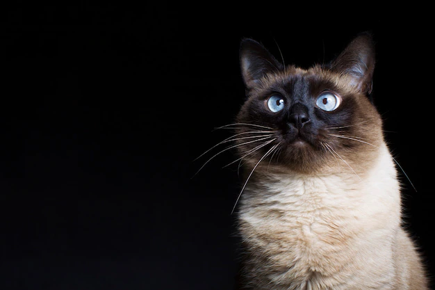
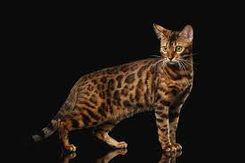
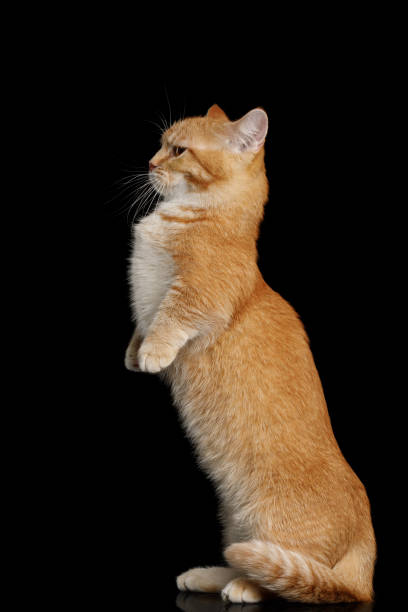

Zostaw followa aby otrzymać więcej wiadomości o kociakach
To moje ulubione rasy kotów
 Jeśli pragniesz miniatury lwa na swojej kanapie,
maine coon to rasa idealna dla ciebie.
Koty te wyróżniają się pokaźnymi rozmiarami - zwłaszcza kocury.
To kot mocno zbudowany, silny i sprawny.
Jeśli pragniesz miniatury lwa na swojej kanapie,
maine coon to rasa idealna dla ciebie.
Koty te wyróżniają się pokaźnymi rozmiarami - zwłaszcza kocury.
To kot mocno zbudowany, silny i sprawny.

Kot syjamski to bardzo stara rasa.
Pierwsze wzmianki na temat tych zwierząt pojawiły się już w XIV wieku.
Koty te przetrwały do czasów współczesnych i są znane m.in. z popkultury.

Koty bengalskie wyglądem przypominają swojego przodka,
dzikiego kota bengalskiego, ale ich charakter jest wyjątkowo przyjazny.
Nie są to jednak potulne zwierzęta, które większość czasu spędzają na kanapie.
Kot bengalski uwielbia aktywność, jest zwinny i wojowniczy.

Młoda rasa kotów, która szturmem podbiła Francję i Amerykę.
Munchkin bez wątpienia wzbudza sensację i wiele kontrowersji.
Większość z nich związana jest z zasadnością ich rozmnażania i hodowli.
Mimo to, jedno jest pewne - munchkiny to wielkoduszne koty w małym ciele,
często niezdające sobie sprawy z ograniczeń wynikających z ich krótkonożności.